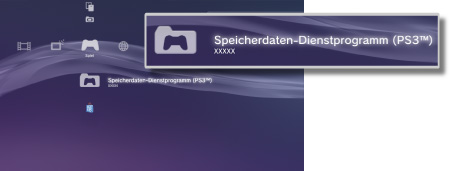

Spiel > Spielen mit Software im PlayStation®3-Format > Verwenden von Speicherdaten
Verwenden von Speicherdaten
Speicherdaten für Software im PlayStation®3-Format werden im Systemspeicher gespeichert. Die Daten werden unter  (Speicherdaten-Dienstprogramm (PS3™)) angezeigt.
(Speicherdaten-Dienstprogramm (PS3™)) angezeigt.

Anmerkungen
- Speicherdaten werden für jeden Benutzer separat verwaltet. Wenn unter
 (Benutzer) mehrere Benutzer vorhanden sind, variieren die unter (Speicherdaten-Dienstprogramm (PS3™)) angezeigten Elemente je nach dem angemeldeten Benutzer.
(Benutzer) mehrere Benutzer vorhanden sind, variieren die unter (Speicherdaten-Dienstprogramm (PS3™)) angezeigten Elemente je nach dem angemeldeten Benutzer. - Wenn Sie ein Speicherdaten-Icon auswählen und die
 -Taste drücken, können Sie Speicherdaten nach Aktualisierungsdatum sortieren oder im angezeigten Menü nach Titel gruppieren.
-Taste drücken, können Sie Speicherdaten nach Aktualisierungsdatum sortieren oder im angezeigten Menü nach Titel gruppieren.
Speichern von Speicherdaten auf dem PSNSM-Server
Sie können Speicherdaten für Software im PlayStation®3-Format auf einem PSNSM-Server speichern, auf ein anderes PlayStation®3-System herunterladen und dann das Spiel damit fortsetzen. Für diese Funktion müssen Sie ein Sony Entertainment Network-Konto haben und den PlayStation®Plus-Abonnement-Service abonnieren.
Automatisches Speichern von Speicherdaten
Sie können neue und kürzlich aktualisierte Speicherdaten automatisch und regelmäßig im Online-Speicher speichern.
Sie müssen diese Funktion für jedes Spiel einzeln einstellen.
1. |
Wählen Sie unter |
|---|---|
2. |
Wählen Sie [Gespeicherte Daten automatisch hochladen] und setzen Sie die Option auf [Ein]. |
 (Spiel) das Spiel mit den zu speichernden Speicherdaten aus und drücken Sie die
(Spiel) das Spiel mit den zu speichernden Speicherdaten aus und drücken Sie die Anmerkungen
- Die nach der Aktivierung dieser Einstellung aktualisierten Speicherdaten werden automatisch hochgeladen.
- Stellen Sie unter
 (Einstellungen) die Option
(Einstellungen) die Option  (System-Einstellungen) > [Automatisches Update] auf [Aus] , um das automatische Update der gespeicherten Daten zu deaktivieren.
(System-Einstellungen) > [Automatisches Update] auf [Aus] , um das automatische Update der gespeicherten Daten zu deaktivieren.
Manuelles Speichern von Speicherdaten
1. |
Wählen Sie |
|---|---|
2. |
Wählen Sie [Kopieren]. |
3. |
Wählen Sie [Online-Speicher] als Speicherort. |
Herunterladen von Speicherdaten aus dem Online-Speicher auf das PS3™-System
1. |
Wählen Sie |
|---|---|
2. |
Wählen Sie die Speicherdaten, die Sie herunterladen möchten, und drücken Sie dann die |
3. |
Wählen Sie [Kopieren]. |
Anmerkungen
- Die maximal verfügbare Speicherkapazität beträgt 1 GB und die Höchstzahl an möglichen Speicherdatenelementen beträgt 1000.
- Speicherdaten für Software in einem anderen als dem PlayStation®3-, PC Engine- oder NEOGEO-Format können nicht gespeichert werden.
- Für kopiergeschützte Speicherdaten gilt Folgendes:
- - Hochladen in den Online-Speicher: Jederzeit möglich.
- - Herunterladen von Speicherdaten aus dem Online-Speicher: Wenn kopiergeschützte Daten einmal in den Online-Speicher hochgeladen oder daraus heruntergeladen wurden, müssen Sie mindestens 24 Stunden warten, bevor Sie dieselben Daten erneut herunterladen können.
- Der Online-Speicher steht bei manchen Spielen nicht zur Verfügung. Informationen zu Spielen oder Diensten, die den Online-Speicher nicht unterstützen, erhalten Sie hier.